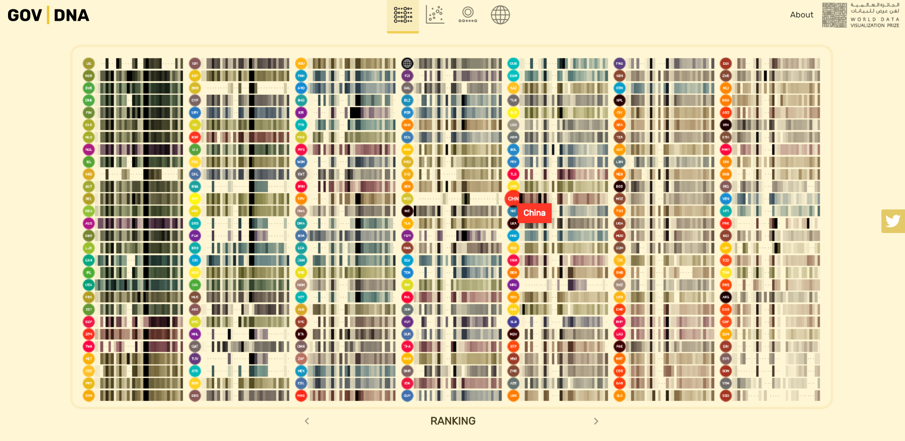
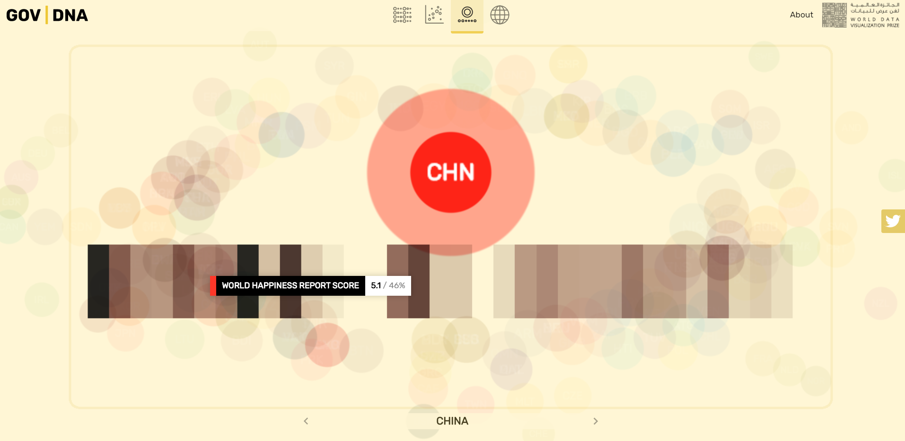
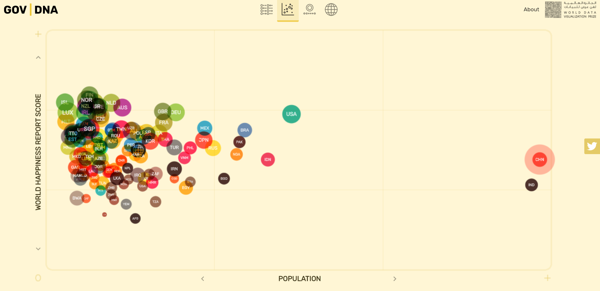

背景介绍
由Frontwise团队制作的数据可视化作品GOV|DNA在2019年世界数据可视化大赛（World Data Visualization Prize 2019）中夺得交互分类冠军。本次大赛的关键词是“政府工作”，意在呈现政府如何改善公民生活的。Frontwise团队巧妙地引入生物学中的DNA概念，将良好政府的决策等视为其特有的DNA，并将各项指标以类似基因序列的方式进行可视化呈现。
可视化介绍
在GOV|DNA中，共有196个国家（及地区）的数据以DNA序列的形式排布在首页。在画面底部可以选择“Ranking”“Region”“GDP PRE CAPITA”三种排序方式。其中，ranking根据每个国家的DNA分数来进行排序，分数越高则意味着该政府越良好。在此衡量体系下，中国处于全球中游偏下位置，低于世界平均水平。

鼠标点击某一具体国家，可以察看其详细情况。人口、国土面积、GDP、教育年限、经济自由指数等一系列指标构成了DNA序列，指标越高则其对应的色块颜色越深，鼠标悬停其上时可以查看指标的具体数值。

若在画面顶部选择第二项“data”模式，则可以进行不同指标间的分析比对。横轴与纵轴可以通过点击”<””>”符号来切换衡量指标，各国家数据则以散点图的形式在画布上呈现，同样在鼠标悬停其上时可以查看具体数值。

亮点介绍
该可视化作品最大的亮点在于引入DNA的概念，将执政能力视为国家政府的独有DNA，既有语义上的独特性，又满足了视觉呈现的直观性与艺术性。画面配色也非常和谐，通过同一颜色的明度值变化来反映不同指标的强弱，使得每个国家的DNA序列可视化都类似生物学上碱基对的排布，切合标题。整个项目使用WebGL开发，拥有流畅优美的动画效果。良好的交互性使得用户能够方便直观地分析比较多个指标，以衡量它们对国家的影响以及相关的政府绩效。